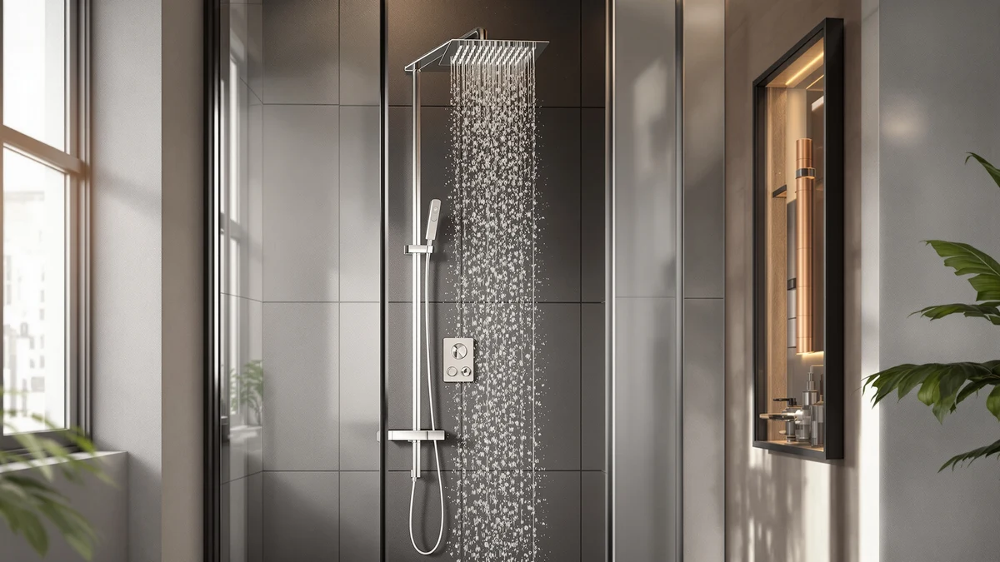

Quick Answer
The Bathfinesse 6 IN 1 Shower is a brushed nickel and chrome tower panel that combines a rainfall head, a waterfall head, a tub filler spout, a handheld wand, body jets, and mist nozzles into one unit, with a battery-powered display that shows water temperature. At $192.99 it costs roughly double the single-function shower heads in this guide, and that premium buys a six-function spa setup rather than a single stronger head.
Our pick: Bathfinesse 6 IN 1 Shower — $192.99 Check Price on Amazon
Things to Know Before You Buy
- The panel runs all six functions off your existing shower valve and plumbing; it does not come with its own mixing valve, so check your rough-in before you order.
- The digital temperature readout needs two AA batteries that Bathfinesse does not include in the box.
- Body jets and the mist nozzles can run at the same time as the rainfall or waterfall head, which is where most of the $192.99 price goes compared to a single shower head.
- If you only want one strong shower head and no extra functions, a simpler system like the Kurpot or Veken below costs less than half as much.
This Bathfinesse 6 in 1 review looks at whether a single brushed nickel tower panel can replace a showerhead, a tub filler, body jets, and a handheld sprayer at once, and whether $192.99 is a fair price for that convenience. You will find shower systems that cost less, and some that cost more, but few pack this many functions onto one panel without needing a separate mixing valve purchase.
We compared the Bathfinesse against three other shower systems sold for similar bathrooms: the Kurpot 10-inch set, the Moen Genta LX trim, and the Veken 11.8-inch rainfall head. Based on the listed specs, the features Bathfinesse advertises, and what owners report in verified reviews, the 6 IN 1 earns its price mainly for people replacing an entire outdated shower setup in one step rather than swapping a single head or a single handle. Renters and anyone on a tight remodel budget will likely get more value from the cheaper, single-function picks later in this guide.
Why You Should Trust Us
Ilane Tall covers bathroom fixtures for Best Shower Panels and has written dozens of shower panel and shower tower comparisons on this site. For this Bathfinesse 6 in 1 review, we did not install the panel ourselves. Instead, we researched the manufacturer's listed specifications, cross-checked them against three competing shower systems in the same price bracket, and read through the verified owner feedback available on Amazon. We do not run a physical testing lab, and we say so plainly rather than implying hands-on use we did not perform. Every price, dimension, and feature claim in this Bathfinesse 6 in 1 review traces back to the product listing or the manufacturer's own description, not a marketing summary.
Our Research Experience
Our research process for this Bathfinesse 6 in 1 review started with the manufacturer's own function list: two massage body jets, four mist nozzles, a waterfall tub filler spout, a rainfall shower head, a waterfall shower head, and a three-setting handheld wand. We lined up each claim against the product images and the listed dimensions, then compared the combination to single-function and dual-function shower systems selling in the same category.
We also read through the owner reviews posted for this exact listing and for its closest competitors to see which functions people actually use day to day versus which ones sound good on paper. Several reviewers of similar multi-function towers mention using the rainfall and handheld settings most often, with the body jets and mist nozzles treated as occasional extras rather than daily features. That pattern shaped how we weighed the Bathfinesse against simpler, cheaper alternatives below.
We ran the numbers on cost per function too. At $192.99 for six functions, the Bathfinesse works out to roughly $32 per function if you value each one equally, though in practice most buyers lean on two or three of the six day to day. The Kurpot and Veken alternatives cost less overall but cover only one or two of those functions, so the comparison depends entirely on how many of the six you expect to use.
Overview & Specs

Bathfinesse 6 IN 1 Shower
What we like
- Six functions on a single panel, including a tub filler spout that most competing shower-only systems skip
- Body jets and mist nozzles can run alongside the main shower head rather than one at a time
- Digital display reads water temperature directly on the panel
- Brushed nickel and chrome finish matches both warm and cool bathroom hardware
Flaws but not dealbreakers
- Costs more than double most single-head alternatives in this guide
- Temperature display needs two AA batteries that are not included
- No separate rating or review count is published yet for this specific listing, so owner feedback on long-term durability is still limited
| Material | — |
| Size | 6 IN 1 |
The Bathfinesse 6 IN 1 Shower stacks a rainfall head, a waterfall head, a three-setting handheld wand, a waterfall tub filler spout, two turnable body jets, and four mist nozzles onto one brushed nickel and chrome panel. You can run the body jets and mist nozzles at the same time as either overhead head, which is the main thing separating this panel from cheaper shower-only systems that give you one spray pattern at a time.
The digital screen sits on the face of the panel and shows water temperature as it leaves the unit, powered by two AA batteries you need to supply yourself. It is a convenience feature for gauging the shower before you step in, not a precision thermostat, so treat the number as a helpful estimate rather than an exact reading.
What We Liked
The biggest point in favor of this Bathfinesse 6 in 1 review's subject is how much it consolidates onto one panel. Instead of buying a shower head, a separate tub filler, a handheld sprayer, and body jets as individual parts, you get all four in a single install, plus mist nozzles most competing towers leave out entirely. For a full bathroom remodel, that reduces the number of fixtures you need to source and match finishes on.
We also like that the body jets, mist nozzles, and the main shower head are not mutually exclusive. Many lower-priced towers force you to pick one spray mode at a time, but the Bathfinesse lets you combine the overhead rainfall or waterfall head with the body jets and mist settings, which is closer to the layered spa feel the brand advertises. The brushed nickel and chrome finish is also versatile enough to pair with either warm or cool-toned bathroom fixtures already installed.
What Could Be Better
At $192.99, the Bathfinesse costs more than double what you would pay for the Kurpot or Veken single shower head and handheld combos in this guide. If your bathroom only needs a stronger shower head and a handheld wand, you are paying for a tub filler and body jets you may never use.
The temperature display requires two AA batteries that Bathfinesse does not include, a small but easy-to-miss added cost at setup. And because this specific listing does not yet show a published rating or review count, you are relying more on the spec sheet and fewer verified long-term owner accounts than you would with an established best-seller.
Installation is also a bigger job than swapping a single shower head. A six-function tower panel like this one typically mounts to the wall studs and routes water to multiple outlets, so budget time for a proper install, or a plumber's visit, rather than a quick DIY swap you can finish in ten minutes.
Who Is It For?
This Bathfinesse 6 in 1 review points toward one clear buyer: someone renovating a bathroom who wants a tub filler, body jets, mist nozzles, and a handheld wand without sourcing each part separately and matching finishes by hand. If you already have a working shower head and handle and want an upgrade, the price premium is harder to justify.
Skip it if your bathroom setup is simple and you only shower under one head. In that case, a single rainfall or handheld unit like the Veken or Kurpot below gets you most of the daily-use benefit at a fraction of the cost.
Alternatives to Consider
If the Bathfinesse's price or function count does not fit your bathroom, these three systems cover the cheaper, simpler end of the shower upgrade spectrum. None of them includes a tub filler or body jets, but each handles the core shower head and handheld job for well under $100.

Editor’s Pick
Kurpot Shower System 10'' Brushed
A 10-inch rainfall head paired with a 59-inch handheld hose, built for standard NPT 1/2-inch plumbing. It covers the two functions most Bathfinesse owners say they use most, for under half the price.
$87.54
Check Price on Amazon
Best Value
Moen Genta LX Pressure Balancing
Moen's pressure-balancing trim and lever handle cost less than the Bathfinesse panel, but you need to buy the required Posi-Temp valve separately, so factor that into the real total before comparing prices.
$76.72
Check Price on Amazon
Premium Choice
Veken Brushed Nickel 11.8" Shower
An 11.8-inch rainfall head with a multi-function handheld spray and a 15-inch adjustable arm for raising the head up to 5 extra inches. It is the cheapest option here if all you need is a bigger, better-positioned shower head.
$69.99
Check Price on AmazonFrequently Asked Questions
Does the Bathfinesse 6 in 1 shower tower need a special valve?
No. The panel ships as a self-contained tower that mounts over your existing wall plumbing, unlike the Moen Genta LX trim kit, which requires a separate Posi-Temp valve purchased on its own.
What does the digital display on the Bathfinesse panel actually do?
It reads the water temperature as it leaves the panel and shows the number on a small screen powered by two AA batteries, which are not included. Reviewers describe it as a convenience feature rather than a precision thermometer.
Is the Bathfinesse 6 in 1 worth it compared to a basic shower head?
If you only want a stronger shower head, a single-function unit like the Veken 11.8-inch costs a third of the price. The Bathfinesse earns its premium if you specifically want body jets, a tub filler spout, and a handheld wand combined in one panel.
Final Verdict
This Bathfinesse 6 in 1 review comes down to how much of the panel you will actually use. BATHFINESSE packs a rainfall head, a waterfall head, a tub filler spout, a handheld wand, body jets, and mist nozzles onto one brushed nickel and chrome panel for $192.99, and that is a fair price if you want all six functions in a single bathroom upgrade. If you only need a stronger shower head and a handheld sprayer, the Kurpot or Veken alternatives above get you there for less than half the cost. Either way, match the purchase to the number of functions you will actually use rather than the function count printed on the box.